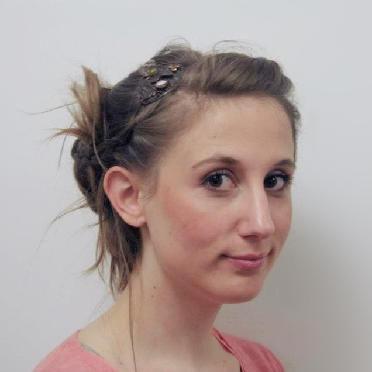

!

Léa Rumiz
-
 06 98 60 15 36
06 98 60 15 36
-
Permis B

!
-
Gestion de projet
-
Communication
-
Médiation culturelle
-
Anglais courant
Compétences complémentaires
-
Photoshop, InDesign
-
QuarkXPress
-
Sphinx
-
Bases HTML 5 / CSS 3
-
WordPress
Qualités personnelles
-
Rigueur
-
Autonomie
-
Esprit d’équipe
-
Dynamisme
Centres d’intérêt
-
Couture
-
Littérature islandaise
-
Pilates / Yoga
!
Expérience professionnelle
2015 - 2018 : Chargée de mission Métropole
Festival Lumière - Lyon (69)
-
Coordonner les événements programmés dans plus de 20 communes de la Métropole.
-
Faire le lien entre le festival et ses partenaires institutionnels et culturels.
-
Assurer la visibilité des événements programmés
-
Promouvoir le festival dans la presse locale en lien avec l’attachée de presse.
-
Évaluer les retombées médiatiques et réaliser une revue de presse.
-
Concevoir des outils de communication (programme, flyers, communiqués) avec l’équipe graphique.
-
Rédiger du contenu de communication web et mettre en place un calendrier de diffusion.
-
Accompagner des invités du festival (acteurs, réalisateurs, professionnels du cinéma).
-
Traduire des interventions (anglais à français).
-
Présenter des séances au public.
-
Encadrer une personne en stage.
2013 - 2014 : Responsable de la programmation culturelle
Le Rize - Ville de Villeurbanne (69)
-
Définir la programmation culturelle.
-
Organiser des événements (pièces de théâtre, conférences, concerts).
-
Définir les moyens humains, matériels et financiers d’un projet.
-
Rédiger des contrats.
-
Accueillir les artistes et intervenants extérieurs.
-
Coordonner des actions culturelles avec les autres services.
-
Animer une réunion.
2013 : Animatrice nature
Direction Paysage et nature - Ville de Villeurbanne (69)
-
Concevoir des animations pédagogiques de vulgarisation scientifique (nature/environnement).
-
Organiser la séance d’animation et préparer le matériel et l’espace d’animation.
-
Animer des groupes jeune public et adultes.
-
Guider les participants lors de la réalisation de l’activité et l’adapter selon leurs besoins.
-
Réaliser le bilan du projet d’animation et proposer des axes d’évolution.
Stages et projet professionnel
2012 : Assistante programmation scientifique et culturelle
Musée des Confluences - Lyon (69)
-
Réaliser une veille de la programmation de musées, en France et à l’étranger.
-
Proposer des pistes de programmation par thématiques et publics cibles.
2009 - 2010 : Chef de projet - valorisation d’un lieu patrimonial
Grange du Clou - Saint-Cyr sur Menthon (01)
-
Concevoir et mettre en place une exposition d’art contemporain.
-
Créer des outils de communication, de relations presse et de médiation culturelle.
2009 : Médiatrice culturelle
Fort du Bruissin, Centre d’art contemporain - Francheville (69)
-
Accompagner des groupes lors de visites guidées.
-
Accueillir et informer le public.
2009 : Chargée de communication
Le Pavé Dans La Mare, Centre d’art contemporain - Besançon (25)
-
Créer des outils de communication et de relations presse.
Formation
2012 : Master 2 Communication, Culture et Institutions
Sciences Po Lyon (69)
2010 : Licence Médiation Culturelle
EAC, Formation supérieure aux métiers de la culture - Lyon (69)